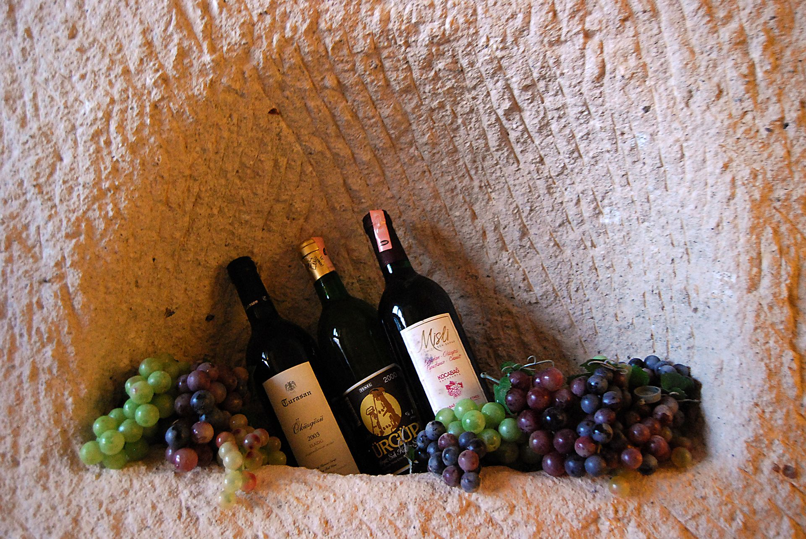
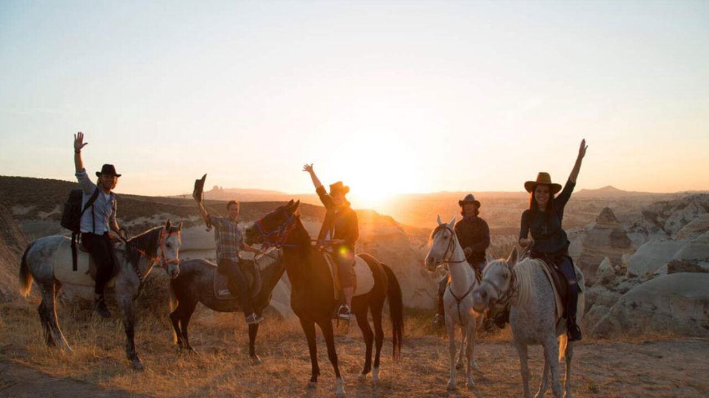

Şehrimiz: Nevşehir
Olağanüstü güzellikte tarihi ve doğal değerlere sahip olan bir Anadolu şehridir Nevşehir. Bir yandan tarımla, çanak çömlekle, şarapla uğraşan yöre halkı diğer yandan bu uğraşları turizm ile birleştirmiş ve bunu yaparken de toplumsal değerlerini korumaya çalışmıştır.
Hititler döneminde adı ”Nissa” olan kent, Osmanlı döneminde ”Nissa”nın yakınlarına kurulan köy ise ”Muşkara”dır. 18. yüzyıla kadar küçük bir Osmanlı köyü olan Muşkara’nın yöreyi fetheden kumandanın ismi olduğu rivayet edilir. Muşkaralı olan Lale Devri’nin en meşhur sadrazamı Damat İbrahim Paşa doğduğu köyü unutmayarak buraya camii, hamam, medrese gibi eserler inşaa ettirir. Halkı vergiden muaf olan köy kısa sürede yenilenerek kendini geliştirir. Hızla büyüyüp yenilenen bu yörenin ismi değiştirilerek Farsça ”yeni şehir” anlamında Nevşehir olarak anılmaya başlar.
Nevşehir’de özellikle Ürgüp ilçesinde turizmden sonraki en büyük geçim kaynakları üzüm ve üzüme dayalı olarak şarapçılıktır. Ürgüp’ü gezerken sık sık şarap mahzen evlerinden görebilirsiniz.

Etkinlikler
Başta Kapadokya olmak üzere önemli turistik bölgelerin bulunduğu Nevşehir’de yapabileceğiniz pek çok aktivite bulunmaktadır. Gezginlerin sıklıkla ziyaret ettiği yerler arasında bulunan şehir, her yıl milyonlarca turisti ağırlamaktadır. Gezi turlarının dışında eğlenceli etkinliklere katılabileceğiniz bölge, tatil açısından gelişmiş olmasıyla bilinmektedir.
Kapadokya’nın simgesi haline gelen sıcak hava balonları, her yıl yüz binlerce kişi tarafından kullanılmaktadır. Harika görüntüler oluşturan bu balonlar, fotoğrafçılık konusunda da ön plana çıkmaktadır. Şehirde yer alan vadiler, hava balonlarını kullanabileceğiniz yerler arasında bulunmaktadır.
Çeşitli bölgelerde bulunan işletmeler sayesinde atlı yürüyüşler yapmanız mümkündür. Her yıl gittikçe popülerleşen atlı yürüyüşler, deneyim açısından büyük bir önem taşımaktadır. Her yıl on binlerce kişi tarafından tercih edilen atlı yürüyüşler, eşsiz vadi manzaraları eşliğinde gerçekleştirilmektedir.
Büyük bir bölümünün ağaçlarla kaplı olduğu Nevşehir’de kamp etkinlikleri hızlıca popülerlik kazanmaktadır. Arkadaş grupları tarafından sıklıkla tercih edilen kampçılık, sosyalleşme açısından da ön plana çıkmaktadır. Genellikle seyir tepelerine yakın bölgelerde tercih edilen kamp aktiviteleri, eğlenceli vakit geçirme konusunda sıklıkla tercih sebebidir.
